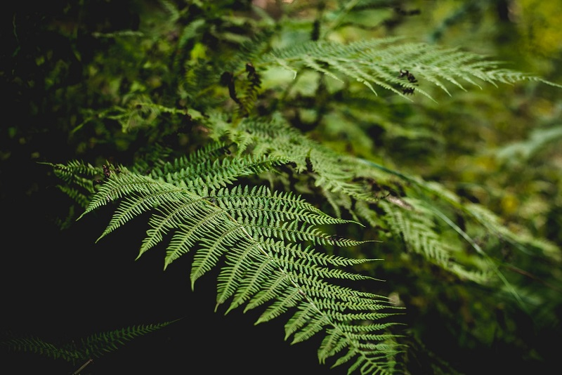

Bryophyta(lumut)

Tumbuhan memiliki pembuluh. Dimana Pteridophyta memiliki sistem pembuluh vaskular, termasuk xilem dan floem, yang berfungsi untuk mengangkut air, nutrisi, dan hasil fotosintesis ke seluruh tubuh tumbuhan.
Selanjutnya, divisi ini berkembangbiak dengan Spora. Dimana siklus hidup Pteridophyta melibatkan reproduksi dengan spora. Spora yang dihasilkan dapat tumbuh menjadi prothallus (tumbuhan kecil) yang membentuk gametofit.
Lalu, mempunyai Akar, Batang, dan Daun Sejati. Dimana Pteridophyta juga memiliki struktur tubuh yang lebih kompleks dibandingkan dengan tumbuhan non-vaskular. Mereka memiliki akar sejati untuk penyerapan air dan nutrisi, batang sejati sebagai struktur pendukung, dan daun sejati untuk fotosintesis.
Tumbuhan ini juga mumnya Habitat di Lingkungan Basah. Dimana tumbuhan ini banyak jenis paku-pakuan biasanya ditemukan di lingkungan yang lembab atau basah, seperti hutan tropis, lembah, dan tepi sungai.
Beberapa contoh Pteridophyta meliputi paku tanduk rusa (Platycerium), paku ekor kuda (Equisetum), dan tumbuhan paku-pakuan lainnya.
Meskipun paku-pakuan memiliki karakteristik pembuluh vaskular, mereka dianggap lebih primitif dibandingkan dengan angiospermae (tumbuhan berbunga) karena siklus hidup mereka yang melibatkan prothallus gametofit yang terpisah..